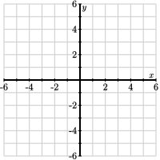
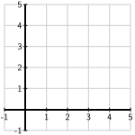
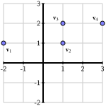

Section 1.1 The dot product
¶Here we introduce a simple geometric operation, known as the dot product, that helps us measure the length of vectors and the angle formed by a pair of vectors. If we have two \(n\)-dimensional vectors \(\vvec\) and \(\wvec\text{,}\) their dot product, denoted \(\vvec\cdot\wvec\) will be a scalar. For two-dimensional vectors, we have
For instance,
Preview Activity 1.1.1.
-
Compute the dot product
\begin{equation*} \twovec{3}{4}\cdot\twovec{2}{-2}\text{.} \end{equation*} Sketch the vector \(\vvec=\twovec{3}{4}\) below. Then use the Pythagorean theorem to find the length of \(\vvec\text{.}\)
Figure 1.1.1. Sketch the vector \(\vvec\) and find its length.
Compute the dot product \(\vvec\cdot\vvec\text{.}\) How is the dot product related to the length of \(\vvec\text{?}\)
Remember that the matrix \(\mattwo0{-1}10\) represents the matrix transformation that rotates vectors clockwise by \(90^\circ\text{.}\) Begin with the vector \(\vvec = \twovec34\) and find \(\wvec\text{,}\) the result of rotating \(\vvec\) by \(90^\circ\text{.}\)
What is the dot product \(\vvec\cdot\wvec\text{?}\)
Suppose that \(\vvec=\twovec ab\text{.}\) Find the vector \(\wvec\) that results from rotating \(\vvec\) by \(90^\circ\text{.}\) Then find the dot product \(\vvec\cdot\wvec\text{.}\)
Suppose that \(\vvec\) and \(\wvec\) are two perpendicular vectors. What do you think their dot product \(\vvec\cdot\wvec\) is?
Subsection 1.1.1 The geometry of the dot product
The dot product is defined, more generally, for any two \(n\)-dimensional vectors:
In some books, you may see the dot product referred to as the inner product. The important thing to remember is that the dot product will produce a scalar. In other words, the two vectors are combined in such a way as to create a number. We will spend some time thinking about the significance of this number.
Example 1.1.2.
We will compute the dot product between two four-dimensional vectors as
Properties of dot products.
As with ordinary multiplication, the dot product enjoys some familiar algebraic properties, such as commutativity and distributivity. More specifically, it doesn't matter which order we compute the dot product of vectors:
If \(s\) is a scalar, we have
We may also distribute the dot product across linear combinations:
Example 1.1.3.
Suppose that \(\vvec_1\cdot\wvec = 4\) and \(\vvec_2\cdot\wvec = -7\text{.}\) Then
The most important property of the dot product, and the real reason for our interest in it, is how it that it gives us geometric information about vectors and their relationship to one another. Let's first think about the length of a vector by looking at the vector \(\vvec = \twovec32\) as shown in Figure 1.1.4
We may find the length of this vector using the Pythagorean theorem as the vector forms the hyptonuse of a right triangle having a horizontal leg of length 3 and a vertical leg of length 2. The length of \(\vvec\text{,}\) which we denote as \(\len{\vvec}\text{,}\) is therefore \(\len{\vvec} = \sqrt{3^2 + 2^2} = \sqrt{13}\text{.}\) Now notice that the dot product of \(\vvec\) with itself:
This is generally true so that we have
More than that, the dot product of two vectors records information about the angle between them. Consider Figure 1.1.5.

To see this, we will apply the Law of Cosines, which says that
The upshot of this reasoning is that
To summarize:
Geometric properties of the dot product.
The dot product gives us the following geometric information:
where \(\theta\) is the angle between \(\vvec\) and \(\wvec\text{.}\)
Activity 1.1.2.
-
Consider the vectors \(\vvec=\twovec32\) and \(\wvec=\twovec{-1}3\text{.}\) Sketch the vectors using Figure 1.1.6.

Figure 1.1.6. Sketch the vectors \(\vvec\) and \(\wvec\) here. Find the lengths \(\len{\vvec}\) and \(\len{\wvec}\) using the dot product.
Find the dot product \(\vvec\cdot\wvec\) and use it to find the angle between \(\vvec\) and \(\wvec\text{.}\)
Consider the vector \(\xvec = \twovec{-2}{3}\text{.}\) Include it in your sketch in Figure 1.1.6 and find the angle between \(\vvec\) and \(\xvec\text{.}\)
If two vectors are perpendicular, what can you say about their dot product?
For what value of \(k\) is the vector \(\twovec2k\) perpendicular to \(\wvec\text{?}\)
-
Sage can be used to find lengths of vectors and their dot products. For instance, if
vandware vectors, thenv.norm()gives the length ofvandv * wgives \(\vvec\cdot\wvec\text{.}\)Suppose that
\begin{equation*} \vvec=\fourvec203{-2}, \hspace{24pt} \wvec=\fourvec1{-3}41\text{.} \end{equation*}Use the Sage cell below to find \(\len{\vvec}\text{,}\) \(\len{\wvec}\text{,}\) \(\vvec\cdot\wvec\text{,}\) and the angle between \(\vvec\) and \(\wvec\text{.}\) You may use
arccosto find the angle's measure expressed in radians.
As we move forward, it will be important for us to recognize when vectors are perpendicular to one another. As the activity shows, vectors \(\vvec\) and \(\wvec\) are perpendicular when their dot product is zero. This is because the angle between the vectors is \(\theta=90^\circ\) so we have
This leads to the following definition.
Definition 1.1.7.
We say that vectors \(\vvec\) and \(\wvec\) are orthogonal if \(\vvec\cdot\wvec=0\text{.}\)In practical terms, a pair of perpendicular vectors are orthogonal. However, the concept of orthogonality is somewhat more general because it allows one or both of the vectors to be the zero vector \(\zerovec\text{.}\)
Up to this point, the dot product is a tool for finding geometric information about vectors. We will now consider some further uses as well.
To begin, we will use the dot product to compare vectors. Consider the vectors \(\uvec\text{,}\) \(\vvec\text{,}\) and \(\wvec\text{,}\) shown in Figure 1.1.8. The vectors \(\vvec\) and \(\wvec\) seem more similar as the directions in which they point are closer. By comparison, \(\uvec\) seems rather dissimilar. We will measure the similarity of vectors by finding the angle between them; the smaller the angle, the more similar the vectors.

Activity 1.1.3.
This activity explores two further uses of the dot product beginning with the similarity of vectors.
-
Our first task is to assess the similarity between various Wikipedia articles by forming vectors from each of five articles. In particular, one may download the text from articles on Veteran's Day, Memorial Day, Labor Day, the Golden Globe Awards, and the Super Bowl, remove common words, such as “the” and “then,” and count the number of times words appeared in each article.
To get a clearer sense, evaluate the following cell that loads in some special commands along with the Wikipedia data. For each of the five articles, you will see a list of the number of times 10 words appear in these articles. For instance, the word “act” appears 3 times in the Veteran's Day article and 0 times in the Labor Day article.
For each of the five articles, we obtain 604-dimensional vectors, that are namedveterans,memorial,labor,golden, andsuper.Suppose that two articles have no words in common. What is the value of the dot product between their corresponding vectors? What does this say about the angle between these vectors?
Suppose there are two articles on the same subject, yet one article is twice is long. What approximate relationship would you expect to hold between the two vectors? What does this say about the angle between them?
Use the Sage cell below to find the angle between the vector
veteransand the other four vectors. To express the angle in degrees, use thedegrees(x)command, which gives the number of degrees inxradians.Compare the four angles you have found and discuss what they mean about the similarity between the Veteran's Day article and the other four. Does your result reflect the nature of these five events?
-
Vectors are often used to represent how a quantity changes over time. For instance, the vector \(\svec=\fourvec{78.3}{81.2}{82.1}{79.0}\) might represent the value of a company's stock on four consecutive days. We call such a vector a time series. Evaluate the Sage cell below to see a representation of two time series \(\svec_1\text{,}\) in blue, and \(\svec_2\text{,}\) in orange, which we may imagine represent the value of two stocks over a period of time.
Even though one stock has a higher value than the other, the two appear to be related since they seem to rise and fall at roughly similar ways. We often say that they are correlated, and we would like to measure the degree to which they are correlated.In order to compare the ways in which they rise and fall, we will first demean the time series; that is, for each time series, we will subtract its average value to obtain a new time series. There is a command
demean(s)that returns the demeaned time series ofs. Use the Sage cell below to demean the series \(\svec_1\) and \(\svec_2\) and plot. (This cell relies on some data loaded by the first cell in this activity.)-
If the demeaned series are \(\tilde{\svec}_1\) and \(\tilde{\svec}_2\text{,}\) then the correlation between \(\svec_1\) and \(\svec_2\) is defined to be
\begin{equation*} \corr(\svec_1, \svec_2) = \frac{\tilde{\svec}_1\cdot\tilde{\svec}_2} {\len{\tilde{\svec}_1}\len{\tilde{\svec}_2}}. \end{equation*}Given the geometric interpretation of the dot product, the correlation equals the cosine of the agle between the demeaned time series, and therefore \(\corr(\svec_1,\svec_2)\) is between -1 and 1.
Find the correlation between \(\svec_1\) and \(\svec_2\text{.}\)
-
Suppose that two time series are such that their demeaned time series are scalar multiples of one another, as in Figure 1.1.9


Figure 1.1.9. On the left, the demeaned time series are positive scalar multiples of one another. On the right, they are negative scalar multiples. Suppose we have time series \(\tvec_1\) and \(\tvec_2\) whose demeaned time series \(\tilde{\tvec}_1\) and \(\tilde{\tvec}_2\) are positive scalar multiples of one another, what is the angle between the demeaned vectors? What does this say about the correlation \(\corr(\tvec_1, \tvec_2)\text{?}\)
Suppose the demeaned time series \(\tilde{\tvec}_1\) and \(\tilde{\tvec}_2\) are negative scalar multiples of one another, what is the angle between the demeaned vectors? What does this say about the correlation \(\corr(\tvec_1, \tvec_2)\text{?}\)
Use the Sage cell below to plot the time series \(\svec_1\) and \(\svec_3\) and find their correlation.
Use the Sage cell below to plot the time series \(\svec_1\) and \(\svec_4\) and find their correlation.
Subsection 1.1.2 \(k\)-means clustering
A typical problem in data science is to find some underlying patterns in a data set. Suppose, for instance, that we have the set of 177 data points plotted in Figure 1.1.10. Notice that the points are not scattered around haphazardly; instead, they seem to form clusters. Our goal here is to develop a strategy for detecting the clusters.

To see why this could be useful, suppose we have medical data describing a group of patients, some of whom have been diagnosed with a specific condition, such as diabetes. For example, maybe we have a record of age, weight, blood sugar, cholestrol, and other attributes for each patient. It could be that the data points for the group having the condition form a cluster that is somewhat distinct from the rest of the data. Suppose that we are able to identify that cluster and that we are then presented with a new patient that has not been tested for the condition. If the attributes for that patient place them in that cluster, we may identify them as being at risk for the condition and perhaps recommend appropriate action.
If there are many attributes for each patient, the data may be high-dimensional and not easily visualized. We would therefore like to develop an algorithm that separates the data points into clusters. We call the result a clustering.
The next activity introduces a technique, called \(k\)-means clustering, that helps us find clusterings. To do so, we will view the data points as vectors so that the distance between two data points equals the length of the vector joining them.
Activity 1.1.4.
To begin, we identify the centroid, or the average, of a set of vectors \(\vvec_1, \vvec_2, \ldots,\vvec_n\) as
-
Find the centroid of the vectors
\begin{equation*} \vvec_1=\twovec11, \vvec_2=\twovec41, \vvec_3=\twovec44. \end{equation*}and sketch the vectors and the centroid using Figure 1.1.11. You may wish to simply plot the points represented by the tips of the vectors rather than drawing the vectors themselves.
Figure 1.1.11. The vectors \(\vvec_1\text{,}\) \(\vvec_2\text{,}\) \(\vvec_3\) and their centroid. Notice that the centroid lies in the center of the points defined by the vectors.
-
Now we'll illustrate an algorithm to create clusterings. To begin, consider the following points, represented as vectors,
\begin{equation*} \vvec_1=\twovec{-2}{1}, \vvec_2=\twovec11, \vvec_3=\twovec12, \vvec_4=\twovec32, \end{equation*}which are shown in Figure 1.1.12.
Figure 1.1.12. We will group this set of four points into two clusters. Suppose that we would like to group these points into \(k=2\) clusters. (Later on, we'll see how to choose an appropriate value for \(k\text{,}\) the number of clusters.) We begin by choosing two points \(c_1\) and \(c_2\) at random and declaring them to be the “centers”' of the two clusters.
For example, suppose we randomly choose \(c_1=\vvec_2\) and \(c_2=\vvec_3\) as the center of two clusters. The cluster centered on \(c_1=\vvec_2\) will be the set of points that are closer to \(c_1=\vvec_2\) than to \(c_2=\vvec_3\text{.}\) Determine which of the four data points are in this cluster, which we denote by \(C_1\text{,}\) and circle them in Figure 1.1.12.
The second cluster will consist of the data points that are closer to \(c_2=\vvec_3\) than \(c_1=\vvec_2\text{.}\) Determine which of the four points are in this cluster, which we denote by \(C_2\text{,}\) and circle them in Figure 1.1.12.
-
We now have a clustering with two clusters, but it may be that we can improve upon them in the following way. First, find the centroids of the two clusters; that is, redefine \(c_1\) to be the centroid of cluster \(C_1\) and \(c_2\) to be the centroid of \(C_2\text{.}\) Find those centroids and indicate them in Figure 1.1.13
Figure 1.1.13. Indicate the new centroids and clusters. Now update the cluster \(C_1\) to be the set of points closer to \(c_1\) than \(c_2\text{.}\) Update the cluster \(C_2\) in a similar way and indicate the clusters in Figure 1.1.13.
-
Let's perform this last step again. That is, update the centroids \(c_1\) and \(c_2\) from the new clusters and then update the clusters \(C_1\) and \(C_2\text{.}\) Indicate your centroids and clusters in Figure 1.1.14
Figure 1.1.14. Indicate the new centroids and clusters. Notice that this last step produces the same set of clusters so there is no point in repeating it. We declare this to be our final clustering.
This activity demonstrates our algorithm for finding a clustering. We first choose a value \(k\) and seek to break the data points into \(k\) clusters. The algorithm proceeds in the following way:
Choose \(k\) points \(c_1, c_2, \ldots, c_k\) at random from our data set.
Construct the cluster \(C_1\) as the set of data points closest to \(c_1\text{,}\) \(C_2\) as the set of data points closest to \(c_2\text{,}\) and so forth.
-
Repeat the following until the clusters no longer change:
Find the centroids \(c_1, c_2,\ldots,c_k\) of the current clusters.
Update the clusters \(C_1,C_2,\ldots,C_k\text{.}\)
The clusterings we find depend on the initial random choice of points \(c_1, c_2,\ldots, c_k\text{.}\) For instance, in the previous activity, we arrived, with the initial choice \(c_1= \vvec_2\) and \(c_2=\vvec_3\text{,}\) at the clustering:
If we instead choose the initial points to be \(c_1 = \vvec_3\) and \(c_2=\vvec_4\text{,}\) we find the clustering:
Is there a way that we can determine which is the better of the two? It feels like a better clustering will be one for which the points in a cluster are, on average, closer to the centroid of their cluster. If we have a clustering, we therefore define a function, called the objective, which measures the average of the square of the distance from each point to the centroid of the cluster to which that point belongs. A clustering with a smaller objective will have clusters more tightly centered around their centroids, which should result in a better clustering.
For example, when we obtain the clustering:
with centroids \(c_1=\twovec{0}{4/3}\) and \(c_2=\vvec_4=\twovec32\text{,}\) we find the objective function to be
Activity 1.1.5.
We'll now use the objective to compare clusterings and to choose an appropriate value of \(k\text{.}\)
-
In the previous activity, our algorithm found the clustering:
\begin{equation*} \begin{array}{rcl} C_1 \amp {}={} \amp \{\vvec_1\} \\ C_2 \amp {}={} \amp \{\vvec_2, \vvec_3,\vvec_4\} \end{array} \end{equation*}with centroids \(c_1=\vvec_1\) and \(c_2=\twovec{5/3}{5/3}\text{.}\) Find the objective of this clustering.
We have now seen two clusterings and computed their objectives. Recall that our data set is shown in Figure 1.1.12. Which of clusterings feels like the better fit? How is this fit reflected in the values of the objectives?
Evaluating the following cell will load and display a data set consisting of 177 data points. This data set has the name
Given this plot of the data, what would seem like a reasonable number of clusters?data.In the following cell, you may choose a value of \(k\) and then run the algorithm to determine and display a clustering and its objective. If you run the algorithm a few times with the same value of \(k\text{,}\) you will likely see different clusterings having different objectives. Choose a value of \(k\) and run the algorithm a few times. Notice that clusterings having lower objectives seem to fit the data better. Repeat this experiment with a few different values of \(k\text{.}\)
-
For a given value of \(k\text{,}\) our strategy is to run the algorithm several times and choose the clustering with the smallest objective. After choosing a value of \(k\text{,}\) evaluating the following cell runs the algorithm 10 times and displays the clustering havig the smallest objective.
For each value of \(k\) between 2 and 9, find the clustering having the smallest objective and plot your findings in Figure 1.1.15.

Figure 1.1.15. Construct a plot of the minimal objective as it depends on the choice of \(k\text{.}\) This plot is called an elbow plot due to its shape. Notice how the objective decreases sharply when \(k\) is small, but then flattens out. This leads to a location, called the elbow, where the objective transitions from being sharply decreasing to relatively flat. This means that increasing \(k\) beyond the elbow does not significantly decrease the objective, which makes the elbow a good choice for \(k\text{.}\)
Where does the elbow occur in your plot above? How does this compare to the best value of \(k\) that you estimated by simply looking at the data in Item c.
Of course, we could increase \(k\) until each data point is its own cluster. However, this defeats the point of the technique, which is to group together nearby data points in the hope that they share common features, thus providing insight into the structure of the data.
We have now seen how the algorithm constructs clusterings and then uses the objective to guide our choice of \(k\text{,}\) the number of the clusters, and to find a good clustering having \(k\) clusters. Notice that we don't claim to have found the best clustering as the true test of any clustering will be in how it helps us understand the data set and helps us make predictions for any new data that we may encounter.
Subsection 1.1.3 Summary
This section introduced the dot product and the ability to investigate geometric relationships between vectors.
-
The dot product of two vectors \(\vvec\) and \(\wvec\) satisfies these properties:
\begin{equation*} \begin{array}{rcl} \vvec\cdot\vvec \amp {}={} \amp \len{\vvec}^2 \\ \vvec\cdot\wvec \amp {}={} \amp \len{\vvec}\len{\wvec}\cos\theta \\ \end{array} \end{equation*}where \(\theta\) is the angle between \(\vvec\) and \(\wvec\text{.}\)
The vectors \(\vvec\) and \(\wvec\) are orthogonal when \(\vvec\cdot\wvec= 0\text{.}\)
We explored some applications of the dot product to the similarity of vectors, correlation of time series, and \(k\)-means clustering.